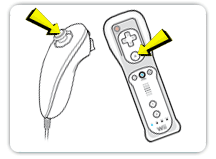
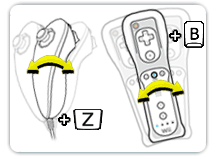
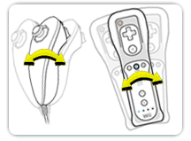

14 |
Game Controls |
 |
Flip Card When it is your turn, you must flip over a card from the top of your Draw Pile.
 Press Control Stick in any direction to flip
OR
Press A Button to flip.
If you have no cards remaining in your Draw Pile, you cannot flip a card and your turn will be skipped. Watch carefully though as you can still duel and react to Arrow Cards.
Grab Totem You can grab the Totem at any time during play. Grabbing the Totem at the correct time is one way to get rid of your cards. If you grab the Totem at the wrong time, you will be penalized.

Shake the Nunchuk and press the Z button
OR
Shake the Wii Remote and press the B button.
Fake Grab Sometimes you may want to do a fake grab to trick other players.

Shake the Wii Remote to do a fake
OR
Shake the Nunchuk to do a fake.
|

 |
 |
 |